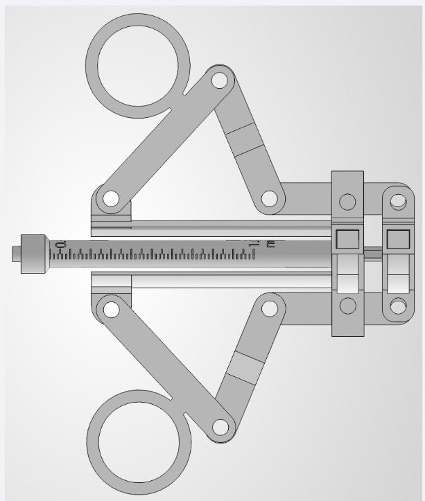
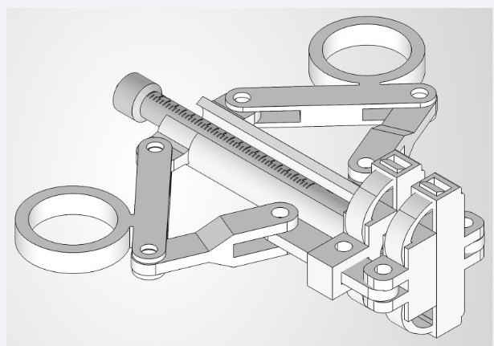
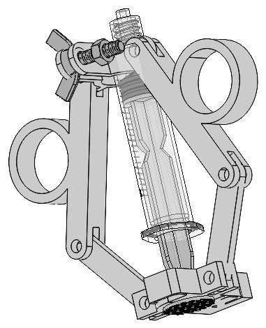

Drawing a tiny fluid sample from the eye with a standard syringe takes two hands, which makes the needle shaky. I designed a hand-mounted linkage with two finger rings that braces the barrel against the hand and turns the plunger pull into a one-hand squeeze, freeing the other hand to support the patient.
| Envelope | About 134 × 103 × 40 mm |
| Parts | 11: syringe, 4 clamp-bracket halves, 6 links |


